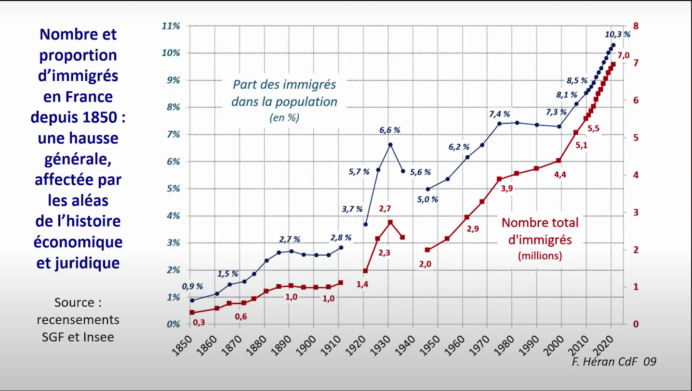
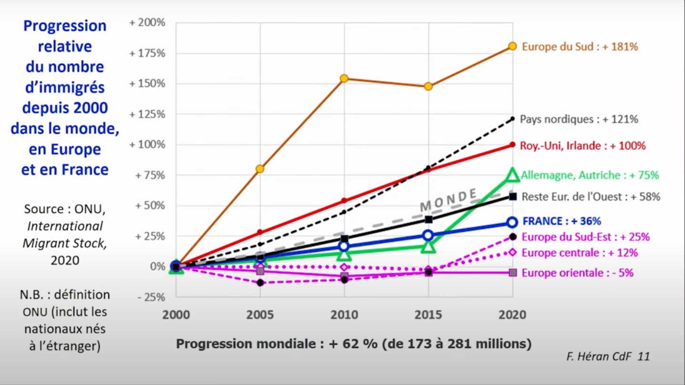
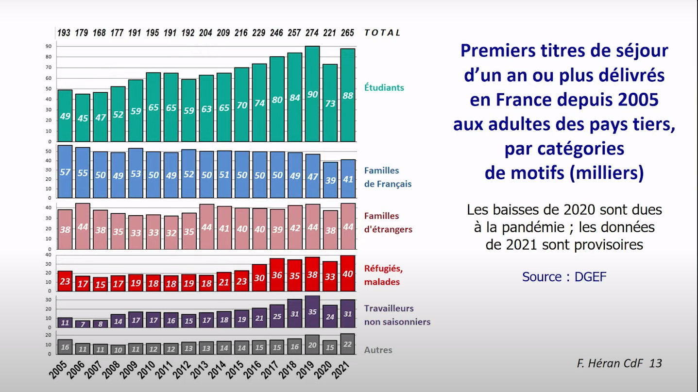
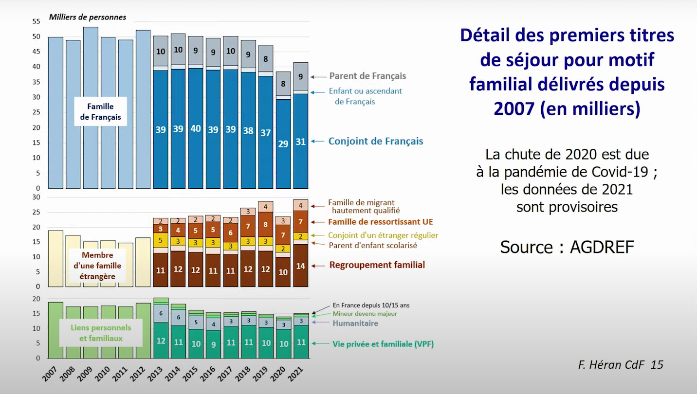

── Attaching core tidyverse packages ──────────────────────── tidyverse 2.0.0 ──
✔ dplyr 1.1.3 ✔ readr 2.1.4
✔ forcats 1.0.0 ✔ stringr 1.5.0
✔ ggplot2 3.4.4 ✔ tibble 3.2.1
✔ lubridate 1.9.3 ✔ tidyr 1.3.0
✔ purrr 1.0.2
── Conflicts ────────────────────────────────────────── tidyverse_conflicts() ──
✖ dplyr::filter() masks stats::filter()
✖ dplyr::lag() masks stats::lag()
ℹ Use the conflicted package (<http://conflicted.r-lib.org/>) to force all conflicts to become errors
library(data.table)
Attaching package: 'data.table'
The following objects are masked from 'package:lubridate':
hour, isoweek, mday, minute, month, quarter, second, wday, week,
yday, year
The following objects are masked from 'package:dplyr':
between, first, last
The following object is masked from 'package:purrr':
transpose
Pourquoi travailler sur le fait migratoire
Le droit des étranger.es est surtout droit contre les étranger.es : les moyens dont les États se dotent pour contrôler l’entrée et la vie des étranger.es sur son territoire
Le conflit entre la souveraineté Étatique et le droit des personnes pose un problème juridique parfois tranché grâce à la statistique. Proportionnalité du droit : les moyens de contrôle dérogatoires restent-ils légaux ?
Fabrication du droit de l’État lié à la conjoncture politique et la perception des flux migratoires
Construction d’un droit contre les étrangers plutôt que droit des étrangers, droit des États à contrôler les étrangers. Lien entre les décisions judiciaires et la perception du fait migratoire : puisque la souveraineté des États entre en conflit avec le droit des personnes, il y a une incertitude juridique sur le degré de contrôle légal et réalisable dans les faits, c’est-à-dire les moyens de coercion.
À partir de quel seuil les flux migratoires deviennent « massifs », et assez importants pour adopter des procédés dérogatoires sans enfreindre le principe de proportionnalité ?
Fabrication du droit de l’État lié à la conjoncture politique et la perception des flux migratoires
Fabrication du droit de l’État lié aux usages sociaux des statistiques par ceux qui pratiquent et produisent le droit (jurisprudence, interprétation des constitutions internationales, traités, droits nationaux, respect des procédures, situation d’urgence ..)
Le fait migratoire d’après les graphiques de François Héran

Le graphique
Années 1850/1871 : doublement, craintes très fortes des population allogènes alors qu’en proportion, ce n’est rien.
Fin XIXe, stagnation, grande crise, incidence directe des conditions économiques sur les flux migratoires.
Première Guerre Mondiale, données manquante (recensement tous les 5 ans). Appel massif aux étranger·es, plus seulement les voisin·es puisqu’on va chercher les Polonais·es (avant plutôt Belges, Allemand·es, Italien·nes, Suisses). Les charbonnages de France.
Crise des années 30, reflux très important, renvoi de + de 100 000 polonais·es « manu militari »
Début années 50, les années de reconstruction et de rattrapage économique. 1974, stop à l’immigration de travail. Obsession de VGE avec les maghrébin·es, et d’autres haut·es fonctionnaires.
Depuis 2000, la migration progresse de façon rapide et constante. Recensement tournant, estimation annuelle.
Insister sur
les deux dimensions et les deux échelles (avec une légende chacune) ainsi que les effets d’optiques : rappeler les valeurs chiffrées, ordre de grandeur
sémiologie graphique : deux figurés, deux couleurs opposées avec cohérence des couleurs
la forme même du graphique : ce sont des points reliés par des droites, soit une « linéarisation » des niveaux mesurés à intervalles fixes
l’illusion de continuité : pour le coup, relative stabilité de la définition d’immigré·e, donc possible de remonter à longtemps
les ruptures : données manquantes, changement de mode de collecte
les légendes
Revenir après sur concrètement, à quoi ressemble le tableau du recensement et quelles opérations on doit faire pour arriver à un tableau qui contient toutes les informations nécessaires?
La progression mondiale

Les titres de séjour

Les titres de séjours familiaux

Les données du recensement de la population
La version anonymisée du recensement est en accès libre sur le site de l’INSEE. Plusieurs fichiers existent (niveau logement, niveau individu localisé à la région, au canton-ville) et censurent différents types d’information.
Les données harmonisées entre 1968 et 2019 permettent de créer des séries longues beaucoup plus simplement qu’en compilant les différents recensements.
## Obtenir les effectifs absolustab_eff <- rp %>%# Opérateur PIPEmutate( # Fonction pour créer une variableIMMI =# Nom de la variableifelse(NATIO !="000"& REG_NAIS =="99", # Condition"Immigré.e", # Valeur si la conditin est vérifiée"Pas immigré.e") # Valeur si la condition n'est pas vérifiée ) %>%count(AN_RECENS, IMMI, wt = POND) # Compte des effectifs pondérés
## Obtenir les pourcentagestab_p <- rp %>%# Opérateur PIPEmutate( # Fonction pour créer une variableIMMI =# Nom de la variableifelse(NATIO !="000"& REG_NAIS =="99", # Condition"Immigré.e", # Valeur si la conditin est vérifiée"Pas immigré.e") # Valeur si la condition n'est pas vérifiée ) %>%count(AN_RECENS, IMMI, wt = POND) %>%# Compte des effectifs pondérésgroup_by(AN_RECENS) %>%# Opération par annéemutate(p = n/sum(n)) %>%# Part dans la populationfilter(IMMI =="Immigré.e") %>%# On ne garde qu'une ligne sur deuxselect(-IMMI) # On enlève la colonne immigration
tab_p <- rp %>%# Opérateur PIPEmutate( # Fonction pour créer une variableIMMI =# Nom de la variableifelse(NATIO !="000"& REG_NAIS =="99", # Condition"Immigré.e", # Valeur si la conditin est vérifiée"Pas immigré.e") # Valeur si la condition n'est pas vérifiée ) %>%count(AN_RECENS, IMMI, wt = POND) %>%# Compte des effectifs pondérésgroup_by(AN_RECENS) %>%# Opération par annéemutate(p = n/sum(n)) %>%# Part dans la populationfilter(IMMI =="Immigré.e") %>%# On ne garde qu'une ligne sur deuxselect(-IMMI) # On enlève la colonne immigration
### Calculstab <- rp[, .(n =sum(POND)), by =c("AN_RECENS", "IMMI")] %>%mutate(AN_RECENS =as.factor(AN_RECENS),p = n/sum(n), .by = AN_RECENS) %>%filter(IMMI ==1)tab %>%ggplot(aes(x = AN_RECENS)) +geom_line(aes(y = p,group =1)) +geom_line(aes(y = n/10^8),color ="red",group =1) +scale_y_continuous(sec.axis =sec_axis(~.*10^8, name="Nombre d'immigré·es",seq(3*10^6, 7*10^6, 5*10^5),labels =format(seq(3*10^6, 7*10^6, 5*10^5), big.mark =" ")),breaks =seq(0.0, 0.1, by =0.005),labels = scales::label_percent(seq(0.00, 0.1, by =0.005),decimal.mark =","),name ="Part d'immigré·es") +scale_x_discrete(breaks =levels(tab$AN_RECENS),name ="Année") +theme_minimal() +theme(axis.text.y.right =element_text(color ="red"),axis.title.y.right =element_text(color ="red",margin =margin(0, 0, 0, 10))) +labs(title ="Nombre et proportion d'immigré·es en France depuis 1968",caption ="Source : RP 1968-2019 (données harmonisées) | 2023 | A. Poissonnier\nLecture : en 1968, il y avait 3 250 000 immigré·es en France et la part de proportion immigrée dans la population française était de 6,50%. ")